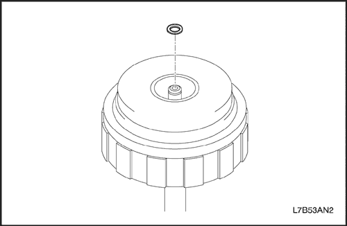


Desmontaje del embrague de avance (C1) y embrague de directa (C2)
Herramientas necesarias
Extractor del anillo elástico de retención J 28585
Compresor de muelles de embrague del embrague de avance y directa J 45186
Compresor de muelle de servo-pistón/embrague J 25024-A
Compresor de muelles del embrague J 23327
- Desmonte la junta, el cojinete de empuje y la pista.
- Retire la junta del conjunto del eje primario.
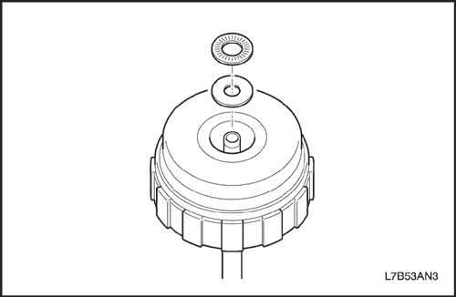
- Desmonte el cojinete de empuje y la pista.
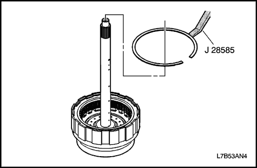
- Desmonte la brida, el disco y el plato del embrague de avance (C1).
- Utilizando J 28585, desmonte el anillo elástico.
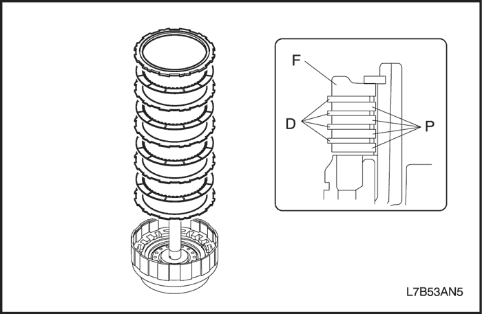
- Desmonte la brida, los 4 discos y los 4 platos.
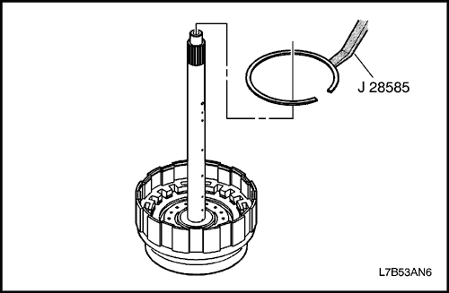
- Desmonte la brida, el disco, el plato y el plato de apoyo del embrague de directa (C2).
- Utilizando J 28585, desmonte el anillo elástico.
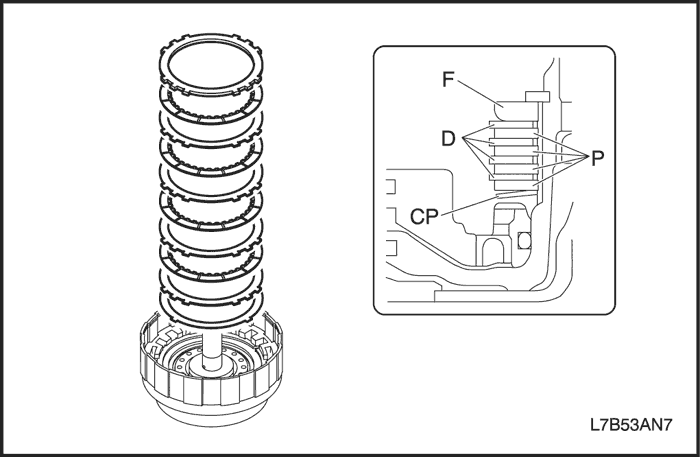
- Desmonte la brida, 4 discos, 4 platos y el plato de apoyo.
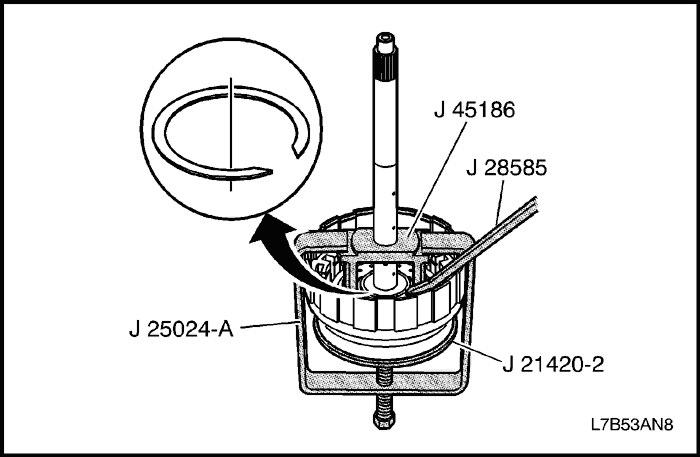
- Desmonte el conjunto del muelle de retorno.
- Coloque la herramienta J 25024-A en un torno con un tornillo forzador en la parte inferior.
- Coloque la herramienta J 45186 en el eje y el alojamiento del embrague de avance y directa, así como en el eje de entrada.
- Coloque la J 21420-2 de J 23327 en la parte superior del tornillo forzador de la J 24024-A.
- Con el tornillo forzador, comprima el muelle del embrague para permitir la extracción del anillo elástico.
- Utilice la J 28585 o los alicates de anillos elásticos para extraer el anillo elástico.
- Retire todas las herramientas.
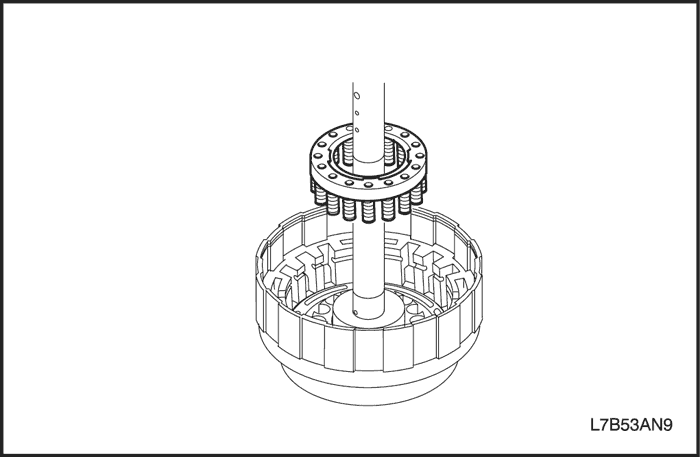
- Desmonte el conjunto del muelle de retorno.
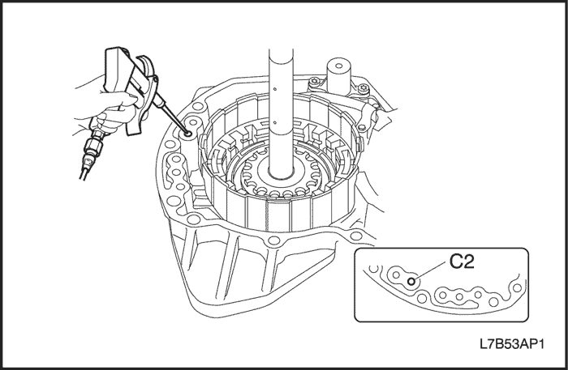
Precaución: Lleve gafas se seguridad si utiliza aire comprimido para evitar lesiones oculares.
- Extraiga el pistón del embrague de directa (C2).
- Instale el conjunto del eje primario en la caja trasera.
Mientras presiona el pistón con la mano, aplique aire comprimido (4 kg/cm ²) en el conducto de aceite, tal y como se muestra en la figura, y desmonte el pistón C2.
Importante: Procure no dañar los anillos elásticos en la caja trasera.
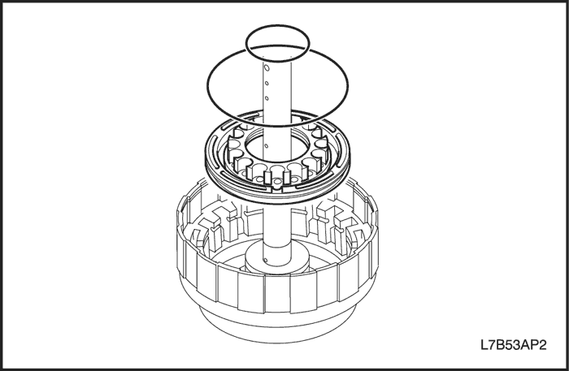
- Quite la junta tórica del pistón C2.
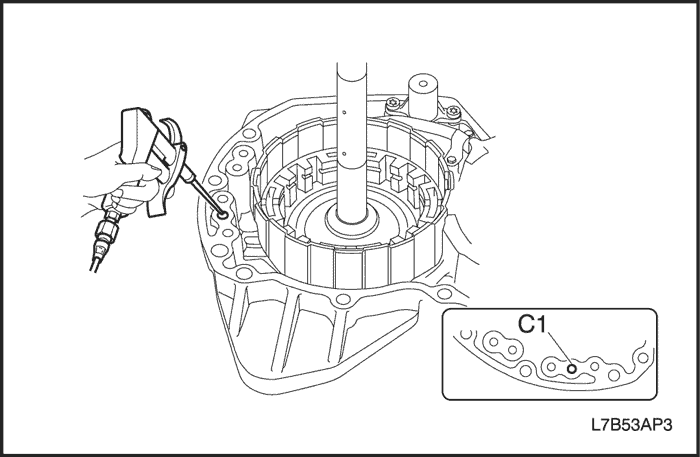
Precaución: Lleve gafas se seguridad si utiliza aire comprimido para evitar lesiones oculares.
- Desmonte el pistón del del embrague de avance (C1).
- Mientras presiona el pistón C1 con la mano, aplique aire comprimido (4 kg/cm ²) en el conducto de aceite, tal y como se muestra en la figura, y desmonte el pistón C1.
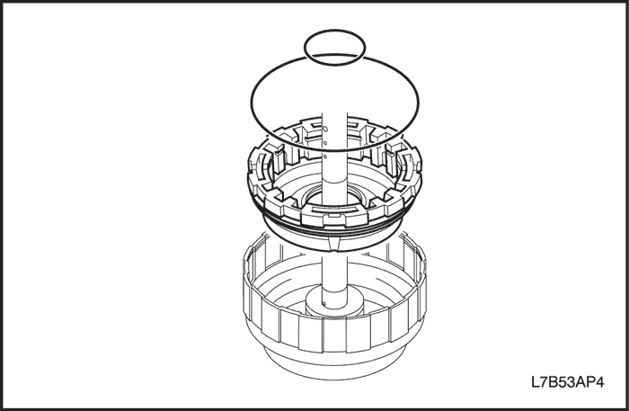
- Quite la junta tórica del pistón C1.
Inspección del embrague de avance (C1) y embrague de directa (C2)
- Compruebe la brida, el disco y el plato.
- Compruebe si la superficie de deslizamiento del disco y el plano no está desgastado o quemado. Si el disco o el plato está desgastado o quemado, sustitúyalos.
Importante: Sustituya por discos nuevos empapándolos durante un mínimo de dos horas en ATF.
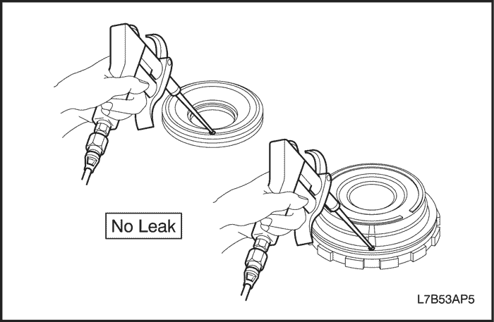
- Compruebe el pistón del embrague de avance (C1) y del embrague de directa (C2).
- Mueva el pistón para verificar que la bola de retención esté libre.
- Aplique aire comprimido para verificar que la válvula no tenga fugas.
Montaje del embrague de avance (C1) y embrague de directa (C2)
Herramientas necesarias
Extractor del anillo elástico de retención J 28585
Compresor de muelles de embrague del embrague de avance y directa J 45186
Compresor de muelle de servo-pistón/embrague J 25024-A
Compresor de muelles del embrague J 23327
- Instale el pistón del embrague de avance (C1).
- Recubra las juntas tóricas nuevas con aceite de la caja de cambios automática y colóquelas en el pistón C1.
- Recubra la superficie interior del tambor con ATF.
- Presione el pistón C1 en el tambor. Tenga cuidado de no dañar las juntas tóricas.
- Instale el embrague de directa (C2).
- Recubra las juntas tóricas nuevas con aceite de la caja de cambios automática y colóquelas en los pistones.
- Recubra la superficie interior del pistón C1 con ATF.
- Presione el pistón con el pistón C1.
- Instale el conjunto del muelle de retorno.
- Coloque el conjunto del muelle de retorno en el pistón del embrague de directa (C2).
Importante: No alinee el corte del segmento del anillo elástico con la garra del retenedor del muelle.
- Coloque la herramienta J 25024-A en un torno con un tornillo forzador en la parte inferior.
- Coloque la herramienta J 45186 en el eje y el alojamiento del embrague de avance y directa, así como en el eje de entrada.
- Coloque la J 21420-2 de J 23327 en la parte superior del tornillo forzador de la J 24024-A.
- Con el tornillo forzador, comprima el muelle del embrague para permitir la instalación del anillo elástico.
- Utilice la J 28585 o los alicates de anillos elásticos para instalar el anillo elástico.
- Retire todas las herramientas.
- Instale la brida, el disco, el plato y el plato de apoyo del embrague directo (C2).
- Monte el plato de apoyo.
Importante: Asegúrese de la dirección del pato de apoyo.
- Instale la brida, los discos y los platos tal y como se muestra en la imagen.
Importante: Asegúrese del número y orden de las bridas, discos y platos.
- Orden: F-D-P-D-P-D-P-D-P-CP
| Embrague y freno | Brida (F) | Plato (P) | Disco (D) | Plato de apoyo (CP) |
| Embrague de directa (C2) | 1 | 4 | 4 | 1 |
- Utilizando la J 28585, instale el anillo elástico en la ranura. Verifique que el espacio entre puntas del anillo elástico de retención no quede alineado con alguno de los cortes.
- Monte la brida, el disco y el plato del embrague de directa (C1).
- Instale la brida, los discos y los platos tal y como se muestra en la imagen.
Importante: Asegúrese del número y orden de las bridas, discos y platos.
| Embrague y freno | Brida (F) | Plato (P) | Disco (D) |
| Embrague de avance (C1) | 1 | 4 | 4 |
- Utilizando la J 28585, instale el anillo elástico en la ranura. Verifique que el espacio entre puntas del anillo elástico de retención no quede alineado con alguno de los cortes.
- Monte la junta, el cojinete de empuje y la pista.
- Instale el cojinete de empuje y la pista.
- Recubra el nuevo anillo elástico con ATF, instálelo en la ranura del conjunto del eje primario.
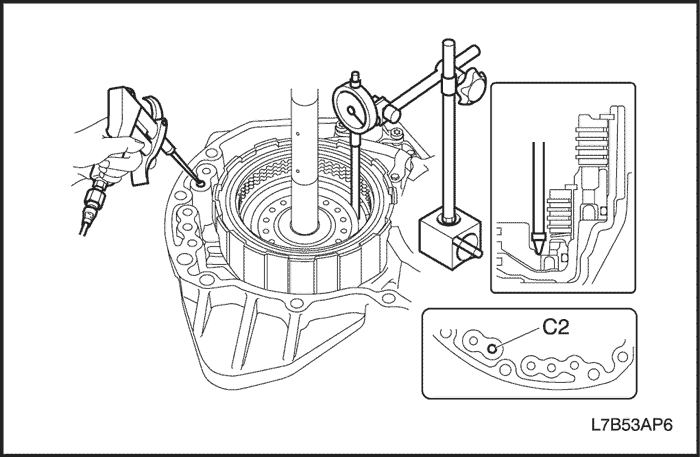
Precaución: Lleve gafas se seguridad si utiliza aire comprimido para evitar lesiones oculares.
- Compruebe la carrera del pistón del embrague de directa (C2).
- Instale el conjunto del eje primario en la caja trasera y ajuste un comparador tal y como se muestre en la figura.
- Aplique aire comprimido (4 kg/cm²) y mida la carrera del pistón C2.
- Carrera del pistón: 1,49-1,91 mm (0,059-0,075 pulg.)
Si la carrera del pistón C2 está fuera de las especificaciones, seleccione otra brida.
- Tipo espesor de brida: 4,0 mm (0,157 pulg.), 4,2 mm (0,165 pulg.), 4,4 mm (0,173 pulg.)
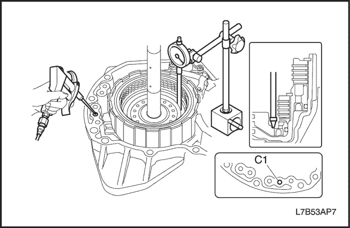
Precaución: Lleve gafas se seguridad si utiliza aire comprimido para evitar lesiones oculares.
- Compruebe la carrera del pistón del embrague de avance (C1).
- Instale el conjunto del eje primario en la caja trasera y ajuste un comparador tal y como se muestre en la figura.
- Aplique aire comprimido (4 kg/cm²) y mida la carrera del pistón C1.
- Carrera del pistón: 0,71-1,09 mm (0,028 - 0,043 pulg.)
Si la carrera del pistón C1 está fuera de las especificaciones, seleccione otra brida.
- Tipo de espesor de brida: 5,0 mm (0,197 pulg.), 5,2 mm (0,205 pulg.), 5,4 mm (0,213 pulg.)
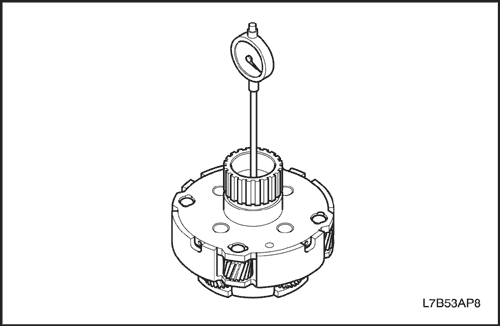
Inspección del conjunto de engranajes planetarios
- Compruebe el casquillo del engranaje planetario.
- Mida con un comparador el diámetro interior del casquillo del engranaje planetario.
Importante: Mida en diferentes puntos y obtenga la media. Si es superior al valor máximo, sustitúyalo por un conjunto de engranaje planetario nuevo.
-
- Diámetro interior:
-
- Estándar: 30,056-30,082 mm (1,183-1,184 pulg.)
- Máximo: 30,132 mm (1,186 pulg.)
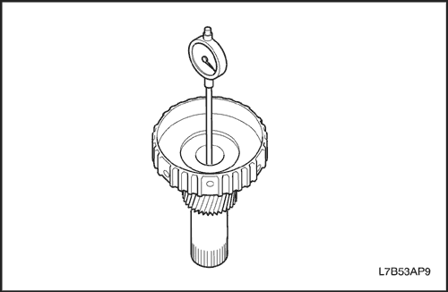
- Revise el engranaje central planetario.
- Mida con un comparador el diámetro interior del casquillo del engranaje central planetario.
Importante: Mida en diferentes puntos y obtenga la media. Si es superior al valor máximo, sustitúyalo por un conjunto de engranaje planetario nuevo.
-
- Diámetro interior:
-
- Estándar: 22,200-22,226 mm (0,874-0,875 pulg.)
- Máximo: 22,276 mm (0,877 pulg.)
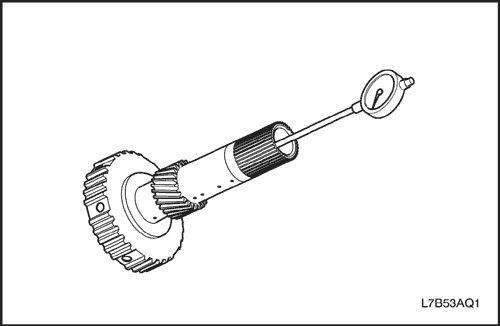
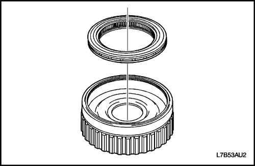
Desmontaje de la corona planetaria delantera
- Desmonte el embrague de 1 dirección nº 2 (F2).
- Desmonte el embrague de 1 dirección nº 2 (F2) de la corona planetaria delantera.
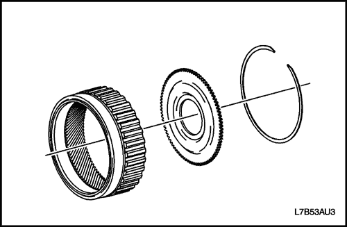
- Desmonte el anillo elástico de retención con un destornillador.
- Desmonte la brida de la corona planetaria delantera.
Montaje de la corona planetaria delantera
- Monte el embrague de 1 dirección nº 2 (F2).
- Instale la brida de la corona planetaria delantera.
- Monte el anillo elástico.
- Monte el embrague de 1 dirección nº 2 (F2) en la corona planetaria delantera.
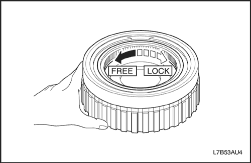
Comprobar el funcionamiento del embrague de 1 dirección nº 2 (F2)
- Sujete la corona delantera y compruebe si la pista interior F2 debería girar libremente en el sentido contrario al de las agujas del reloj y debería bloquearse en el sentido contrario.
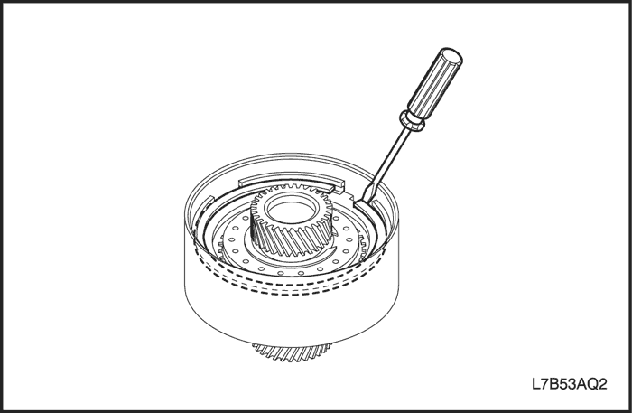
Desmontaje del embrague de reducción (C3)
Herramientas necesarias
Extractor del anillo elástico de retención J 28585
Compresor de muelles del embrague J 23327
Compresor de muelle de servo-pistón/embrague J 25024-A
Compresor de muelles de embrague del embrague de avance y directa J 45186
- Desmonte la brida, el disco y el plato del embrague de reducción (C3).
- Desmonte el anillo elástico de retención con un destornillador.
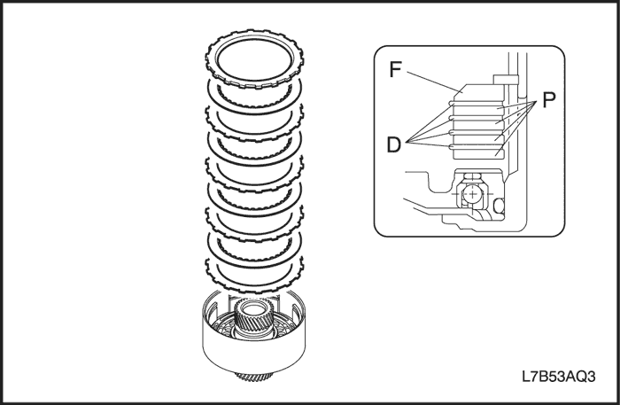
- Desmonte la brida, los 4 discos y los 4 platos.
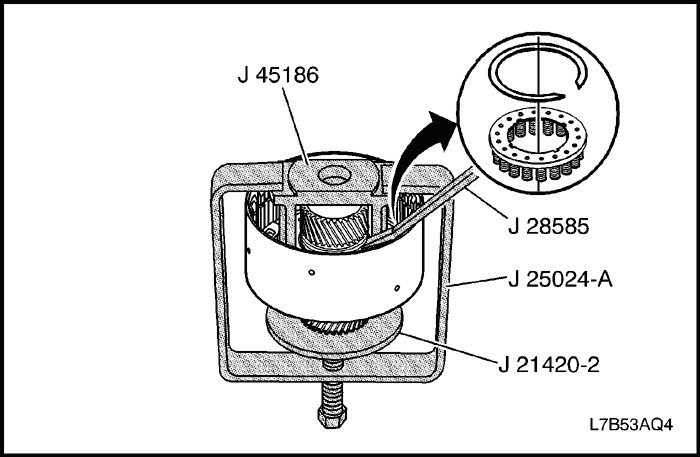
Importante: Procure no dañar el engranaje central planetario delantero de reducción.
- Desmonte el conjunto de muelles de retorno del embrague de reducción (C3).
- Coloque la herramienta J 25024-A en un torno con un tornillo forzador en la parte inferior.
- Coloque la herramienta J 45186 del conjunto del muelle de retorno del embrague de reducción (C3).
- Coloque la J 21420-2 de J 23327 en la parte superior del tornillo forzador de la J 25024-A.
- Coloque el alojamiento del embrague con la J 45186 en la J 21420-2 y bajo los brazos de la J 25024-A.
- Con el tornillo forzador, comprima el muelle del embrague para permitir la extracción del anillo elástico.
- Utilice la J 28585 o los alicates de anillos elásticos para extraer el anillo elástico.
- Desmonte el conjunto del muelle de retorno.
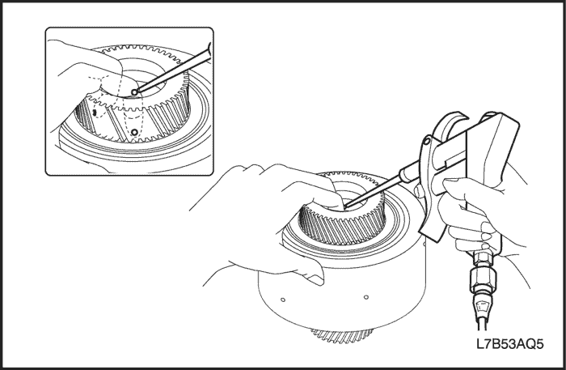
Precaución: Lleve gafas se seguridad si utiliza aire comprimido para evitar lesiones oculares.
- Extraiga el pistón del embrague de reducción (C3).
- Cubra 2 orificios de los 4 del conducto de aceite del embrague de reducción (C3) con las figuras. Aplique aire comprimido (4 kg/cm²) en cualquier orificio y desmonte el pistón C3.
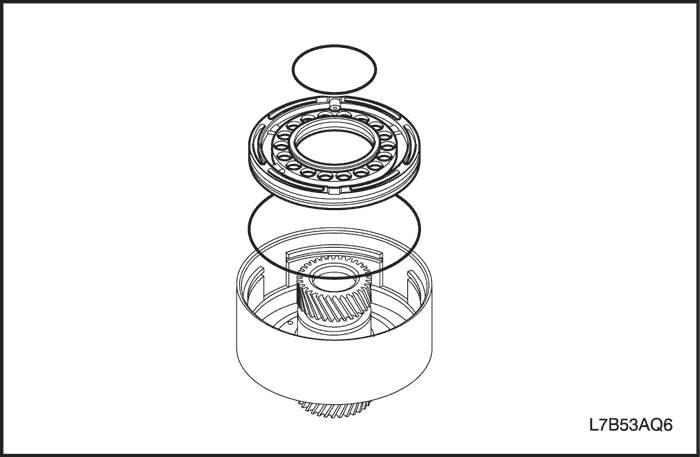
- Quite las juntas tóricas del pistón C3.
Inspección del embrague de reducción (C3)
- Compruebe la brida, el disco y el plato.
- Compruebe si la superficie de deslizamiento del disco y el plano no está desgastado o quemado. Si el disco o el plato está desgastado o quemado, sustitúyalos.
Importante: Sustituya por discos nuevos empapándolos durante un mínimo de dos horas en ATF.
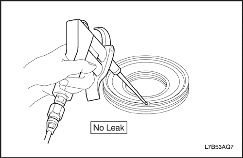
- Compruebe el pistón del embrague de reducción (C3).
- Mueva el pistón para verificar que la bola de retención esté libre.
- Aplique aire comprimido para verificar que la válvula no tenga fugas.
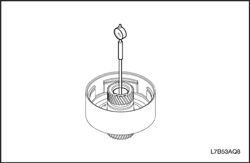
- Compruebe el tambor del embrague de reducción (C3).
- Utilizando un comparador, mida el diámetro interior del casquillo del tambor del embrague de reducción (C3).
Importante: Mida en diferentes puntos y obtenga la media. Si es superior al valor máximo, sustitúyalo por otro nuevo.
-
- Diámetro interior:
-
- Estándar: 36,125-36,150 mm (1,422-1,423 pulg.)
- Máximo: 36,200 mm (1,425 pulg.)
Montaje del embrague de reducción (C3)
Herramientas necesarias
Extractor del anillo elástico de retención J 28585
Compresor de muelles del embrague J 23327
Compresor de muelle de servo-pistón/embrague J 25024-A
Compresor de muelles de embrague del embrague de avance y directa J 45186
- Monte el pistón del embrague de reducción (C3).
- Recubra las juntas tóricas nuevas con aceite de la caja de cambios automática y colóquelas en los pistones.
- Recubra la superficie interior del tambor C3 con ATF.
- Presione el pistón C3 en el tambor C3.
Importante: Tenga cuidado de no ocasionar daños en la junta tórica.
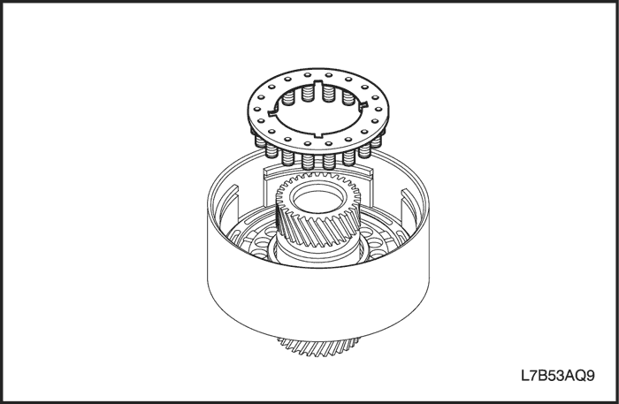
- Monte el conjunto de muelles de retorno del embrague de reducción (C3).
- Coloque el conjunto del muelle de retorno del embrague de reducción (C3) en el embrague de reducción (C3).
- Coloque la herramienta J 25024-A en un torno con un tornillo forzador en la parte inferior.
- Coloque la herramienta J 45186 del conjunto del muelle de retorno del embrague de reducción (C3).
- Coloque la J 21420-2 de J 23327 en la parte superior del tornillo forzador de la J 25024-A.
- Coloque el alojamiento del embrague con la J 45186 en la J 21420-2 y bajo los brazos de la J 25024-A.
- Con el tornillo forzador, comprima el muelle del embrague para permitir la instalación del anillo elástico.
- Utilice la J 28585 o los alicates de anillos elásticos para instalar el anillo elástico.
Importante: Asegúrese de que el corte del segmento del anillo elástico no está alineado con la garra del retenedor de muelles.
- Monte la brida, el disco y el plato del embrague de reducción (C3).
- Instale la brida, los discos y los platos tal y como se muestra en la imagen.
Importante: Asegúrese del número y orden de la brida, platos y discos.
| Embrague y freno | Brida (F) | Plato (P) | Disco (D) |
| Embrague de reducción (C3) | 1 | 4 | 4 |
- Instale el anillo elástico con un destornillador en la ranura. Verifique que el espacio entre puntas del anillo elástico de retención no quede alineado con alguno de los cortes.
- Compruebe la carrera del pistón del embrague de reducción (C3).
- Carrera del pistón: 1,52 - 1,90 mm (0,059 - 0,075 pulg.)
Si la carrera del pistón C3 está fuera de las especificaciones, seleccione otro pistón.
- Tipo de espesor de brida: 3,6 mm (0,142 pulg.), 3,8 mm (0,150 pulg.), 4,0 mm (0,157 pulg.)
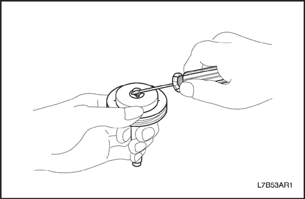
Desmontaje del pistón del freno de reducción (B4)
- Desmonte el pistón del freno de reducción (B4).
- Desmonte el anillo elástico de retención con un destornillador.
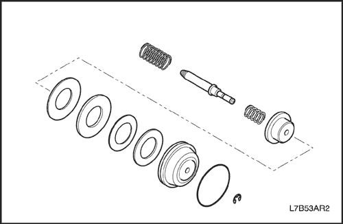
- Desmonte el conjunto del pistón B4 tal y como se muestra en la figura.
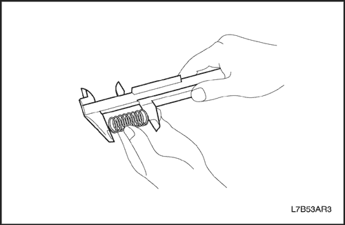
- Compruebe el muelle.
- Mida la longitud libre y el diámetro exterior de los muelles exteriores e interiores.
| Nombre de la pieza | Longitud libre | Diámetro exterior |
| Muelle exterior | 40.24 mm (1.584") | 20.3 mm (0.799") |
| Muelle interno | 13.5 mm (0.531") | 10.0 mm (0.394") |
Montaje del pistón del freno de reducción (B4)
- Instale el pistón del freno de reducción (B4).
- Monte el pistón B4 tal y como se muestra en la figura.
- Recubra la nueva junta tórica con ATF, instálela en la ranura del pistón B4.
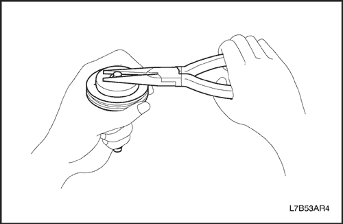
- Utilizando los alicates finos, instale el nuevo anillo elástico en la ranura del vástago de pistón B4.
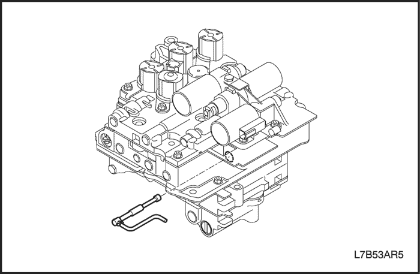
Desmontaje de la caja de válvulas
Nota: La caja de válvulas sólo está disponible como una unidad completa para un servicio. Los únicos componentes que pueden repararse de forma independiente son los solenoides de cambio y la caja de válvulas.
- Desmonte la válvula manual.
- Desmonte la válvula manual.
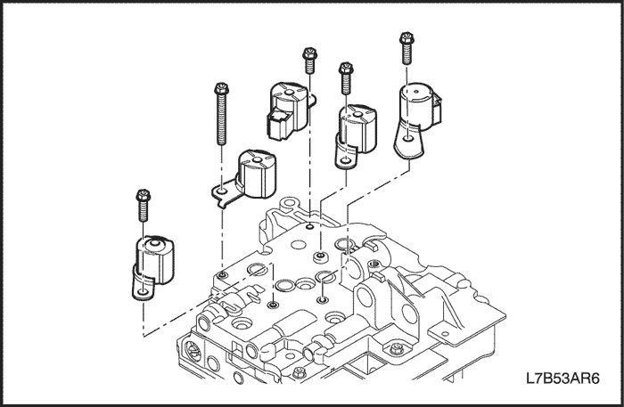
- Desmonte los solenoides de cambio (SS1, SS2, SS3, SS4, SS5).
- Desmonte los 5 tornillos y los 5 solenoides.
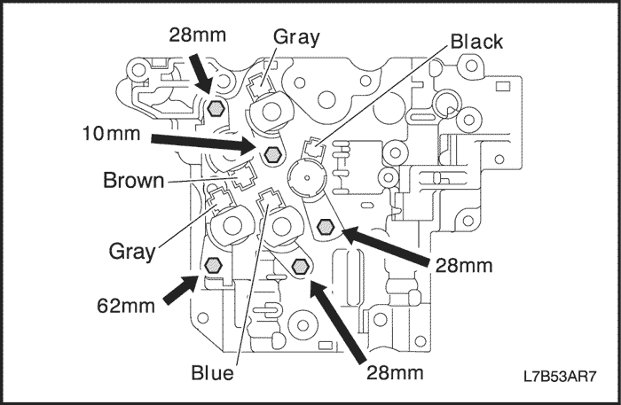
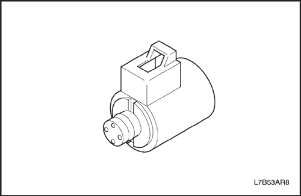
Inspección de la caja de válvulas
- Compruebe el solenoide de cambio (SS1, SS2, SS3, SS4, SS5).
- Compruebe la resistencia con ohmímetro.
- Valor estándar de SS1, SS2, SS3, SS4, SS5 : 11-16O (20°C)
Conjunto de la caja de válvulas
- Monte los solenoides de cambio (SS1, SS2, SS3, SS4, SS5).
- Sustituya la junta tórica de cada solenoide e instale los 5 solenoides.
Importante: Asegúrese de utilizar la nueva junta tórica sin dañarla.
- Apriete los 5 tornillos de cada solenoide.
Apretar
Apriete el tornillo del solenoide hasta 7 N•m (62 lb-pulg.).
- Monte la válvula manual.
- Monte la válvula manual.
| © Copyright Chevrolet Europe. Reservados todos los derechos |